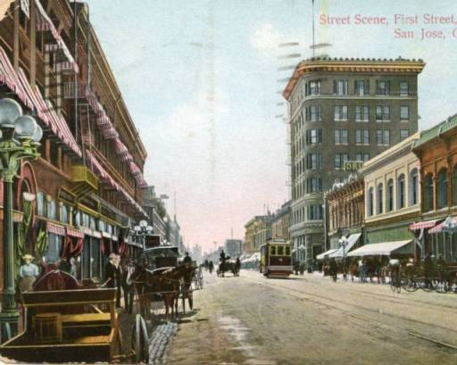
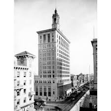
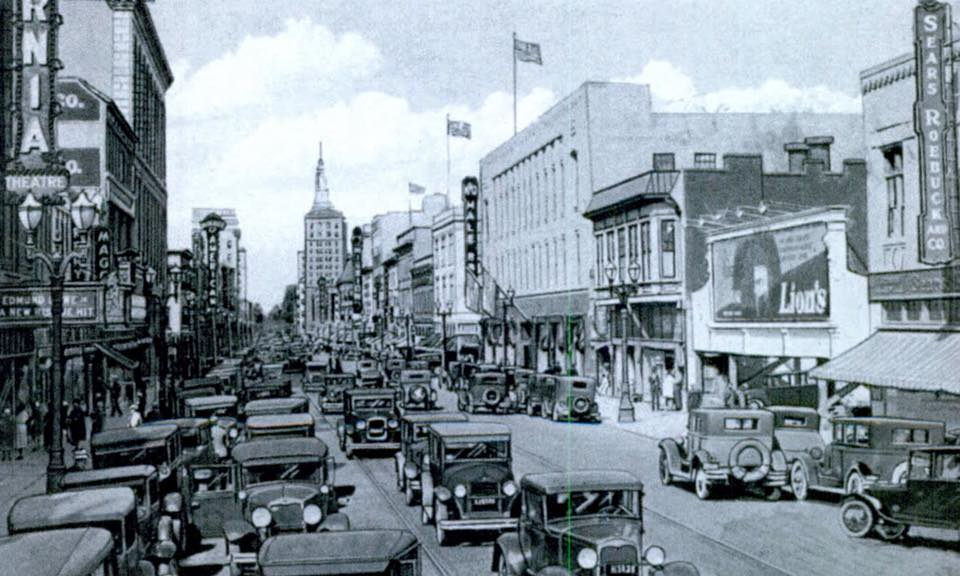
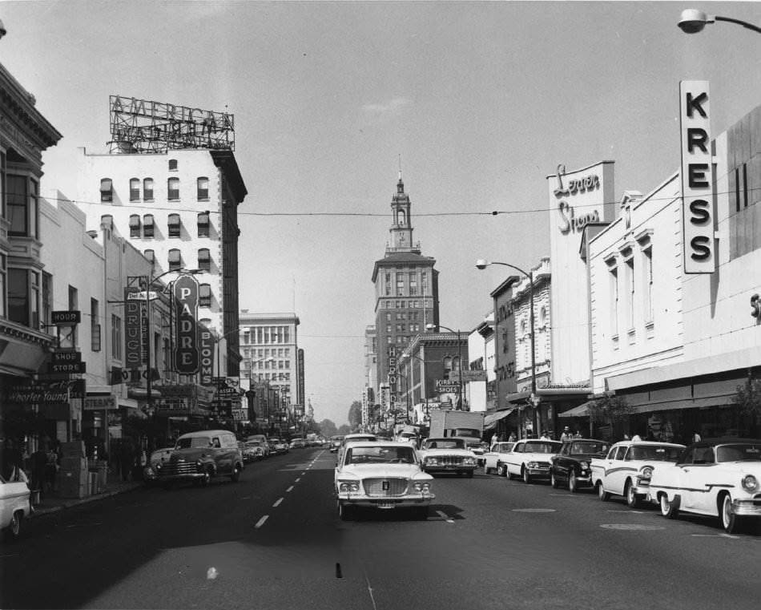
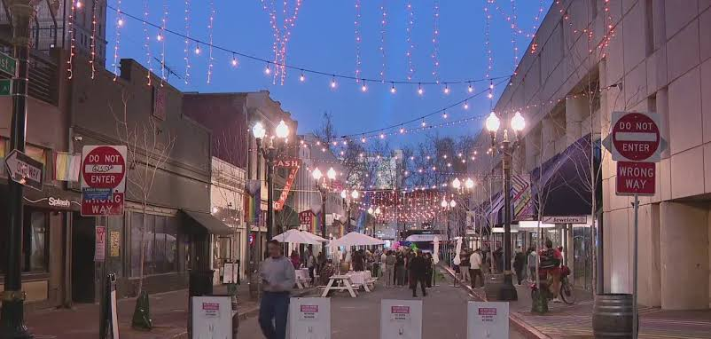

Stop 6 of 8
South First Street Historic Commercial Corridor
Next: Cathedral Basilica + San Jose Museum of Art →
Historic Photos




Today

Next: Cathedral Basilica + San Jose Museum of Art →
Historic Photos




Today
